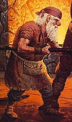

GNOME

Гномы - раса маленьких, выносливых и крепких созданий. Они живут очень долго и
накапливают огромный опыт. Гномы стойки к воздействию ядов, но уязвимы к
сильным ударам (bash) в силу своих размеров. Гномы видят в темноте. В связи с
их огромной мудростью. гномы нейтральны, иначе они потеряют свои знания и
вызовут порицание.
Базовый экспириенс для Гномов:
Witch = 1300 Cleric = 1300 Thief = 1300 Warrior = 1300
Warlock = 1500